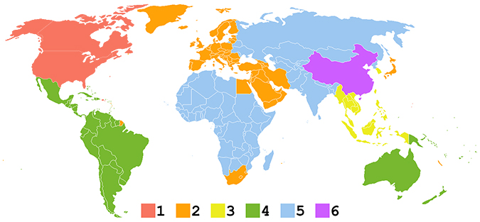
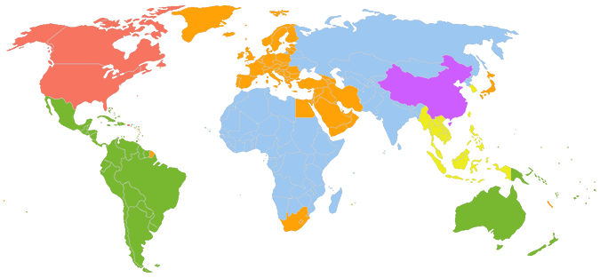

| Els discs de DVD o Blu-ray
poden contenir un o més codis de regió o zones que indiquen en
quines àrees del món es pot distribuir. Les especificacions de cada equip reproductor
indiquen quina zona poden reproduir que coincideix en la zona en la qual s'ha venut. Els
discs sense codi de regió són anomenats totes les regions o regió 0, és a dir, contenen
tots els codis de regió (1, 2, 3, 4, 5 i 6) i significa que poden ser reproduïts en qualsevol
aparell reproductor.
En teoria, això permet que els estudis cinematogràfics controlin diversos aspectes del
llançament de DVD o Blu-ray, entre els quals s'inclouen el contingut o la data de llançament,
però en realitat, el principal motiu és el preu final de venda segons la demanda i el poder
adquisitiu de cada regió. |
REGIÓ 1 |
|
|
Estats Units, Canadà,
Bermudes i territoris estatunidencs com Puerto Rico i les
Illes Verges Americanes.
|
REGIÓ 2
|
<
|
|
Europa,
Grenlàndia, l'Oest d'Asia,
Egipte,Japó,
Sud-àfrica, Lesotho,
Swazilàndia,
Dependències d'ultramar franceses,
Dependències d'ultramar britàniques i el
Regne dels Països Baixos
|
REGIÓ 3
|
|
|
Sud-est d'Àsia, i
Corea del Sud
|
REGIÓ 4
|
|
|
Oceania(excepte Nova Caledònia)
, Amèrica Central (excepte Puerto Rico i les Illes Verges)
i Amèrica del Sud
(excepte la Guaiana Francesa)
|
REGIÓ 5
|
|
|
Africa
(excepte Egipte, Sudáfrica, Lesotho y Swazilàndia), els països de la zona central d'Àsia incloent els de la
CEI,
Mongòlia i
Corea del Nord
|
REGIÓ 6
|
|
|
Xina
|
REGIÓ 0
|
| Informal, no és una especificació oficial i pot ser reproduït en totes les regions.
Les combinacions més utilitzades actualment són les següents: |
- 1/4, per distribuir en tot Amèrica (encara que falta la Guaiana Francesa)
- 2/5, per unir Europa i Àfrica
- 2/3/5/6, per distribuir en tota l'Àsia
- 3/4, per distribuir a tot Oceania.
|
|

|